РЕАЛЬНЫЙ ГЕЙМПЛЕЙ
ПЛАТФОРМЕР / БОЙ / АЛЬФАNEON
Играть NEON
CLAW
Крыши, катана, лук и враги, которых нельзя просто забить одной кнопкой.
Игры Сергея Гостова / открываются в браузере
От карточной партии до неонового боя. У каждой игры — кадры настоящего геймплея и кнопка запуска. В каталоге видно, где нужен компьютер, а где можно играть с телефона.
ACID UNO · ГОТОВА · МОБИЛЬНАЯИгровая полка
Короткие ролики показывают реальные кадры. Нажми ▶, чтобы посмотреть момент игры, затем «Играть», чтобы открыть её. Управление зависит от игры и указано в каталоге.
Крыши, катана, лук и враги, которых нельзя просто забить одной кнопкой.
Готовые игры и альфы отмечены отдельно. Мобильные игры отмечены в карточке; проекты с клавиатурой лучше открывать на компьютере.
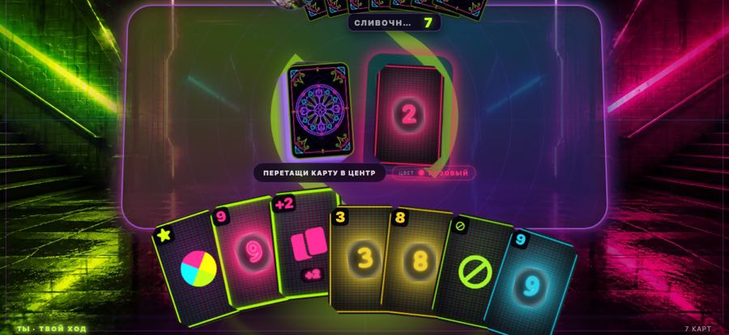
01Игра · мобильная · готоваACID UNOУпоротое уно без доната. Боты с именами и характером, партия на 2–7 игроков. Ни рекламы, ни ожиданияИграть ↗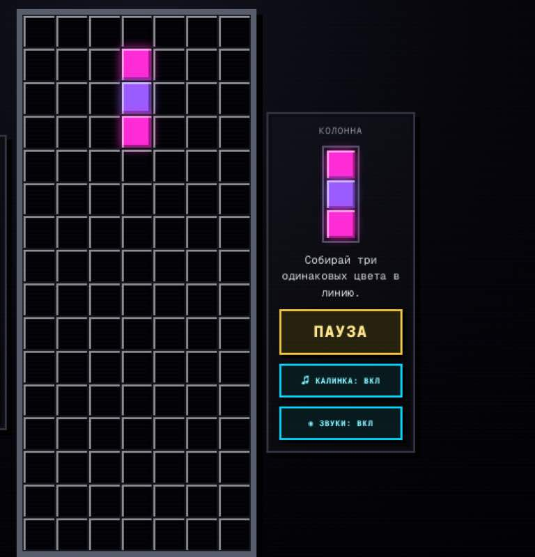
02Игра · головоломка · готоваТетколорТа самая цветная головоломка из 90-х, только фишки каждую партию другие, их одиннадцать наборов. Складывай, пока поле не съело тебяИграть ↗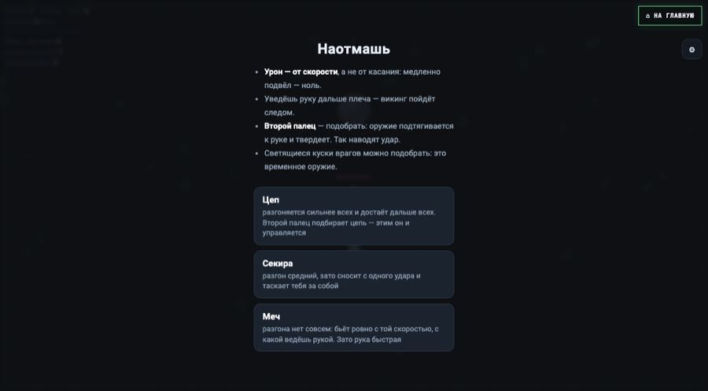
03Игра · физика · готоваНаотмашьМеч на цепи слушается плохо, и в этом вся игра. Разгонись — вынесешь троих. Промахнись — улетишь самИграть ↗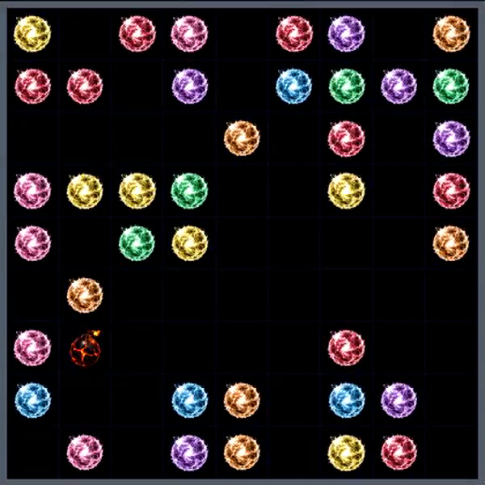
04Игра · головоломка · готоваНеон ЛинииСобирай линии, пока поле не заполнилось. Бомба, камень и волшебный шар — чтобы дожить до следующего этапаИграть ↗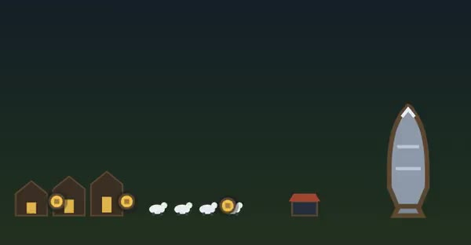
05Игра · экономика · готоваДеревняНачинается с монетки, заканчивается кораблём. Коровы, молоко, золото и ни одной кнопки «подождите»Играть ↗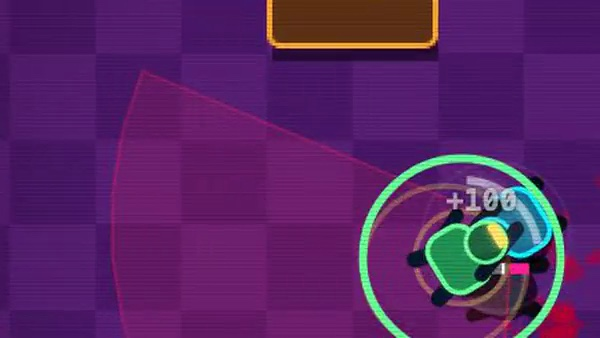
06Игра · клавиатура · готоваHOTLINE ABAKANБей в долю музыки, и враг падает с одного касания вместо двух. Промахнулся по такту — дерись как всеИграть ↗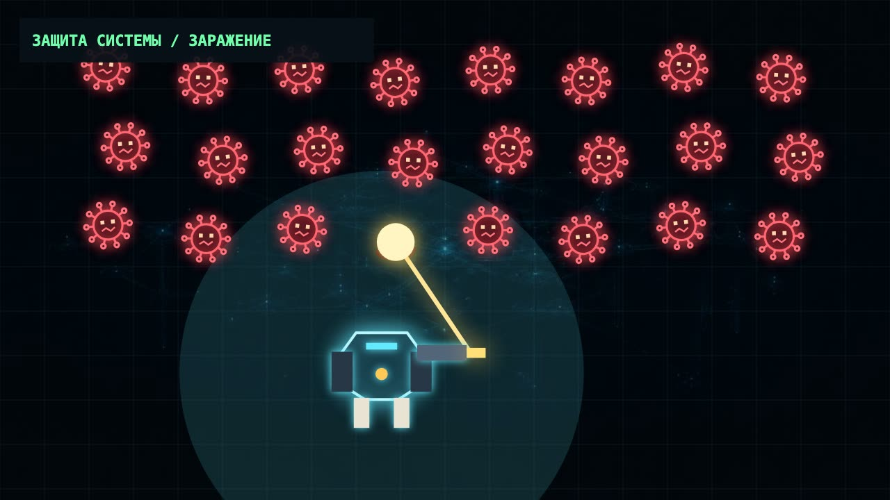
07Квест · Python · альфаQueQuestВирусы лезут в компьютер, а ты оказываешься внутри защиты. Потом возвращаешь способности через настоящий Python и передаёшь машине только разрешённую работуИграть ↗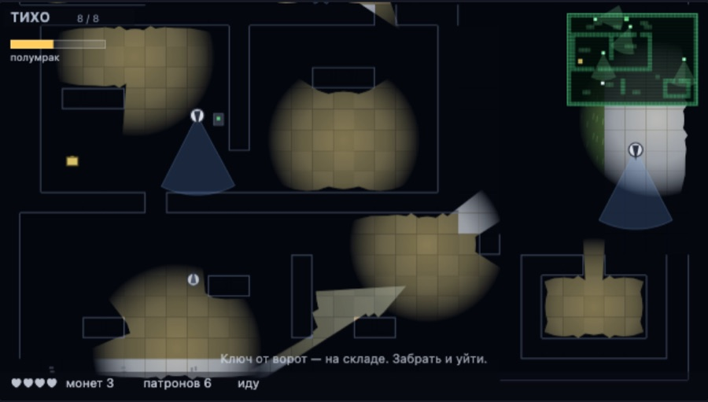
08Игра · стелс · альфаМГСХолодная ночь в Сибири. Ты бежишь из тюрьмы, и тебя уже ищут. Крадись, гаси свет, снимай часовых — тебя убивают с одного касания, их тожеИграть ↗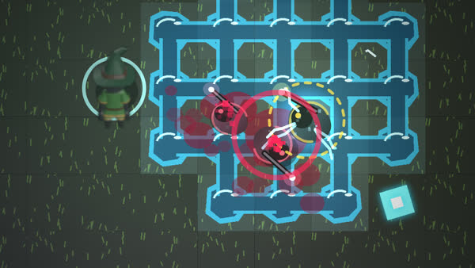
09Игра · клавиатура и мышь · альфаТЕХНОМАГИЯПять стихий, и они смешиваются. Жги, топи, взрывай — и смотри, что осталось на полу. Включая тебяИграть ↗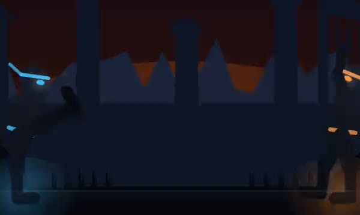
10Игра · тактика · альфаБитва СтихийКамень-ножницы-бумага выросли: огонь, вода и ветер, у каждого урон и суперудар. Угадай, что выберет он, и не дай угадать себяИграть ↗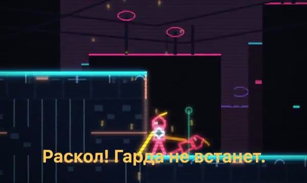
11Игра · клавиатура · альфаNEON CLAWПлатформер с фехтованием: крыши, катана, лук и стражи, которых нельзя просто задолбить кнопкойИграть ↗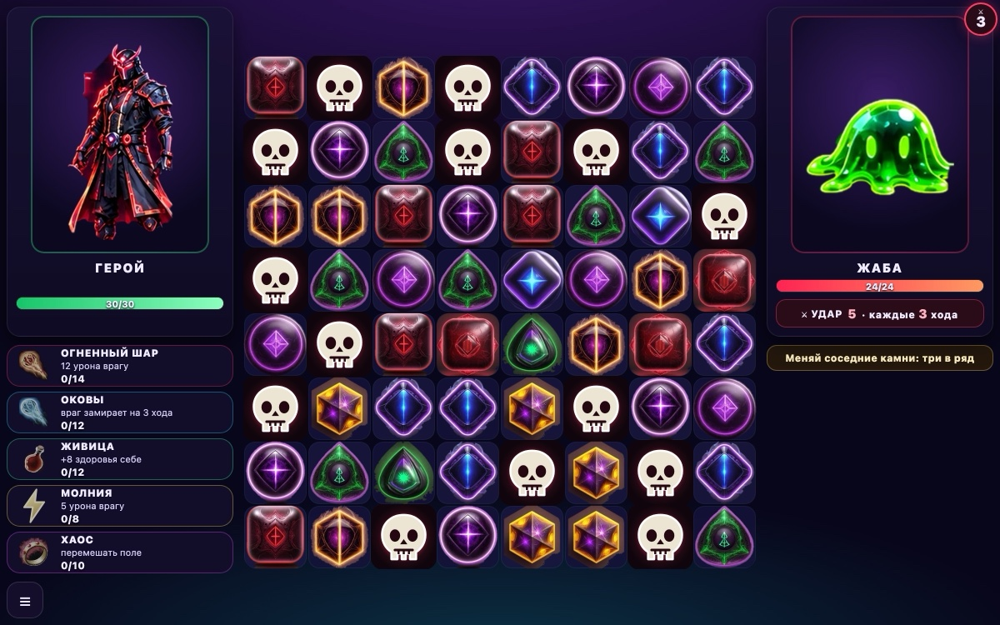
12Игра · три-в-ряд · альфаМатч РПГТри-в-ряд с боем: камни кормят ману, заклинания жгут боссов. Между боями — история: кладбище, Маури и очень недовольная жаба. Пока — первые три главыИграть ↗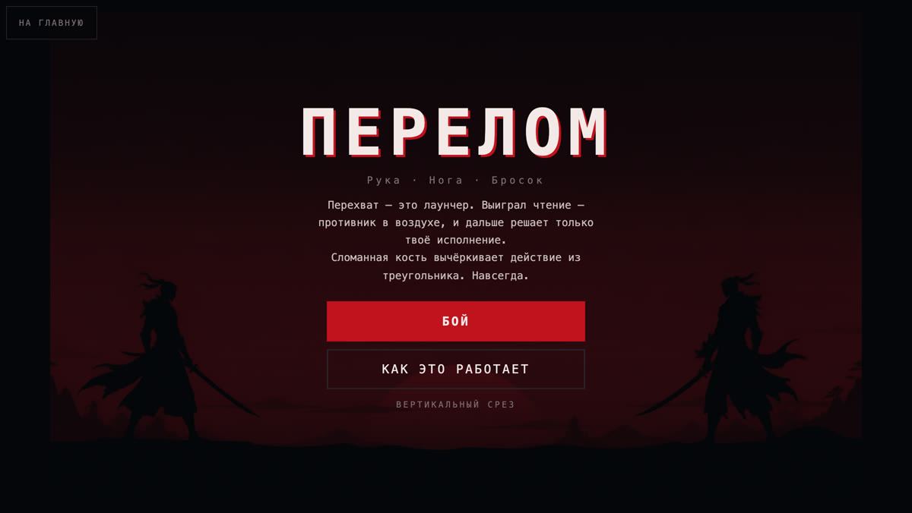
13Игра · клавиатура · альфаПЕРЕЛОМФайтинг на перехватах: выигранное чтение подбрасывает противника, а сломанная кость навсегда вычёркивает у него действиеИграть ↗